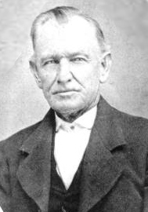
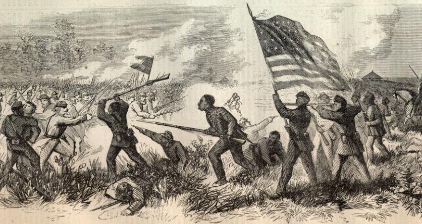

|
The Battle of Milliken's Bend was a Confederate attempt
to distract the Union's drive to take Vicksburg,
Mississippi. The battle ended as a tactical stalemate; while
the Confederates inflicted substantial casualties, they
could not stop Ulysses S. Grant's siege. The battle's main
significance is that African-American troops played an
|

Brig. Gen. Henry McCulloch
|
important role in fending off the Confederate assault,
demonstrating to leaders on both sides that black soldiers
could indeed fight.
The Union siege of Vicksburg began on May 19th, 1863. The
garrison's commander, John C. Pemberton, quickly pressed the
Confederate government for assistance. President Jefferson
Davis agreed with Pemberton's assessment that the situation
was dire, and ordered Trans-Mississippi commander Edmund
Kirby Smith to take immediate action. Smith decided to
attack Union positions near Milliken's bend. According to
Confederate intelligence reports, Milliken's Bend was being
used by the Union army as a supply depot. Smith believed
that the position would be an easy target, because it was
being guarded by convalescents and African-American troops.
He gave General Richard Taylor responsibility for leading
the assault. Taylor split his 4,500 troops into three
groups. One brigade was sent to Milliken's bend, under the
command under the command of Brigadier General Henry McCulloch.
Another was sent north to Lake Providence, and a third was
sent south to Young's Point.
The Confederates got underway on June 6th. Colonel
Hermann Lieb, commander of Milliken's Bend, sensed that
something was afoot, and sent the 10th Illinois Cavalry and
9th Louisiana Infantry to investigate. The men of the 9th
Louisiana were former slaves from Louisiana, Mississippi,
and Arkansas, and had been in the Union army for less than a
month. Heavy skirmishing ensued when Lieb's soldiers
encountered the Confederates, and the Federals were
compelled to retreat. Lieb immediately requested support
from Admiral David Dixon Porter, and two gunboats, the
Choctaw and the Lexington, were dispatched.
Skirmishing continued through the night on the 6th, and
into the morning on the 7th. When the sun finally rose at
5:30 a.m., the battle began in earnest. For over an hour,
The Confederates were able to push the Federals backward in
bloody hand-to-hand combat. Then, at 7:00 a.m., the Choctaw
and Lexington arrived, firing upon the Confederates with
grape and canister shot. By 10:00 a.m., the Rebels were in
full retreat. This ended the Battle of Milliken's Bend, as
|

The Battle of Milliken's Bend
received extensive coverage in Harper's Weekly
and other periodicals, as did the Battle of Fort Wagner.
Both engagements served to rally support for the enlistment
of black troops.
|
the other prongs of the Confederate attack at Young's Point
and Lake Provident failed to engage the enemy.
Confederate losses at Milliken's Bend were 44 killed, 131
wounded and 10 missing out of 1,500 engaged. Union losses
were much more substantial; 101 killed, 285 wounded, and 266
missing out of 1,061 engaged. The three African-American
regiments at Milliken's Bend, the 9th Louisiana, the 1st
Mississippi Infantry, and the 13th Louisiana Infantry,
suffered a casualty rate of 35%, an unusually high
percentage. The 9th Louisiana was hit particularly hard, as
45% of the regiment's members were lost. No unit in the
Civil War suffered a higher casualty rate in a single
battle.
The Battle of Milliken's Bend did a great deal to
convince commanders on both sides that African-American
troops were battle-worthy. McCulloch, the Confederate
commander, remarked that his troops' attack "was resisted by
the negro portion of the enemy's force with considerable
obstinacy, while the white or true Yankee position ran like
whipped curs almost as soon as the charge was ordered."
Ulysses S. Grant also noted his belief that African-American
troops had passed an important test. A month and a half
later, African-American troops would once again prove
themselves, this time at Fort Wagner in South Carolina.
Source: Joan Waugh, ed., Facts on File Encyclopedia of American
History: Civil War and Reconstruction, 1856 to 1869 (New York: Facts on
File, 2003), 232-233.
|